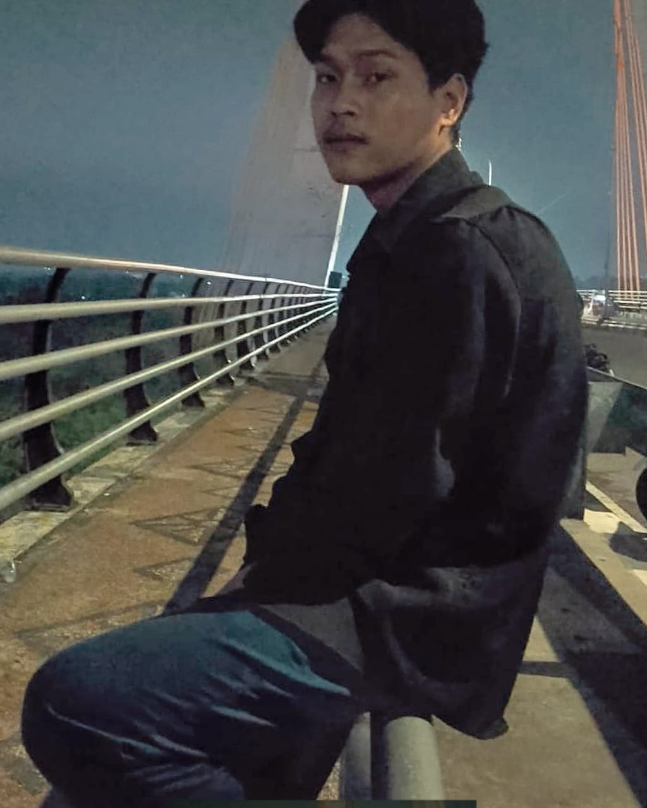

Web Developer | Mahasiswa
saya berasal dari ajamu,medan dan besar di rokan hilir,sekarang berkuliah di stemik dharmapala saya mempunyai hobi di bidang olahraga namun kini masuk ke jurusan sistem informasi,saya ingin mencoba bidang yang saya tidak bisa dengan dosen yang baiik dan teman saya yakin akan bisa,Saya adalah pengembang web pemula yang bersemangat menciptakan pengalaman digital yang menarik dan fungsional. Saya suka memecahkan masalah dan belajar hal baru setiap hari.dan selalu menambah pengalaman yang ada
Website statis pribadi yang menampilkan karya dan skill saya dalam pengembangan front-end.
sebuah platform digital (biasanya berupa website atau aplikasi) yang digunakan untuk menjual produk atau jasa melalui internet. Berbeda dengan toko fisik, toko online bisa diakses kapan saja dan dari mana saja oleh pelanggan selama mereka terhubung ke internet.
Email: hdian883@email.com
LinkedIn: dian.com/in/
Instagram: dian1221